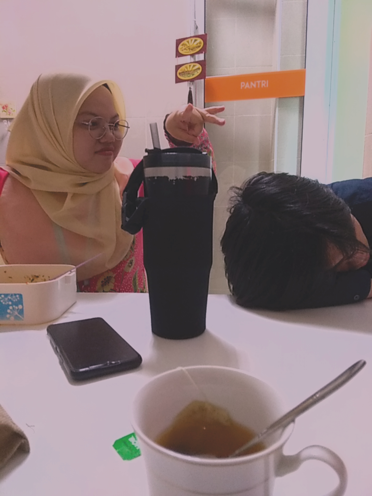

"In a book, i'm just a chapter and you're the reader, if you not seeing me in the last pages, you must know that i'm not the main character" -Nobody.

Industry Training at Perbadanan Perpustakaan Awam Pahang (PPAP)
The experience that I feel when be a part of industry training at Perbadanan Perpustakaan Awam Pahang (PPAP).
The Pahang Public Library Corporation Enactment, which was passed in 1973, led to the creation of the Pahang Public Library Corporation (PPAP).
To examine the PPAP Enactment's drafting, the Khutub Khanah Am Kuantan Committee was constituted in 1972. It was inaugurated in 1987 after moving in 1985 to the old State Legislative Assembly Building on Jalan Gambut.
With the creation of District Libraries, Branches, Mobile Libraries (group loans), and Village Libraries, library services have since been extended to all 11 Districts in the State of Pahang.
At Lot 10, Jalan Kemunting, Kuantan, the library has since relocated. All reading, educational, recreational, and ICT needs are met through services that are current with technological advancements.
The reason I choose this library for my industrial training is that I was born in the State of Pahang, yet the Pahang Public Library is not too far from where I live. Additionally, the Pahang population Library is highly supportive of the growth of knowledge for the general population, according to searches for library-related content on social media and own knowledge. On the other hand, I am interested in learning more about the library management system and the resources and services that users may use to fulfill their needs. A lot of experience gained during industrial training in the library. An experience that cannot be forgotten is the experience with the PPAP staff who gave a lot of guidance regarding the management of the library. I along with two of my friends also took all the knowledge shared for future use.
I can gain a lot of knowledge when there are activities organized in the library. The programs that are organized are really interesting and suitable for the public as well as among parents or among children. On the other hand, I was also able to meet the same intern students undergoing industrial training at PPAP. We were able to share stories and knowledge while undergoing industrial training.
